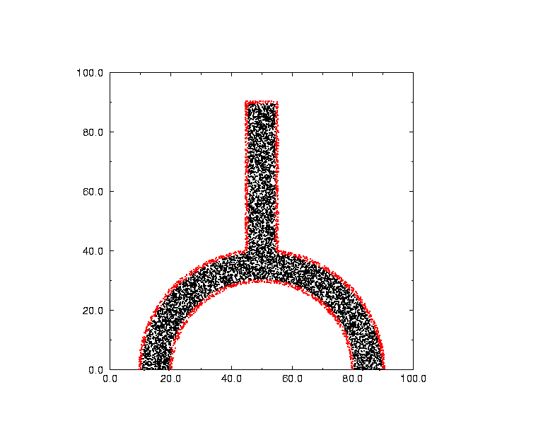

sandia_cvt, a FORTRAN90 code which handles point placement, and moment determination, within arbitrary 2D or 3D regions.
The program was written under contract to Sandia National Laboratory,
The region is specified at a run time by an input file. The input file is processed by a large geometry package known as DIATOM. This package is apparently a variant of a package known as CTH, both of which are used at Sandia. DIATOM is written in C and FORTRAN.
Sandia expected the CVT routines to be eventually included in the body of DIATOM, so that they would simply provide an option to determine point placement and moments, as part of a larger computation.
For our testing, we included an interface with DIATOM, but we also made it possible to define the geometry of the region using a simple FORTRAN subroutine that simply says "yes, this point is in the region". By cutting out a few calls, the interface to DIATOM can be severed, and a standalone package can be produced for other purposes.

Here is a picture of the test region. The red points lie on the boundary and the black points lie within. These data points were not generated by the Voronoi code. Instead, 50,000 uniformly distributed points were generated in the bounding box, and then those points in or on the region were selected. It's hard to tell from this picture, but a set of points selected from a uniform distribution tend to have voids and clusters, which will NOT occur in a Voronoi method.
The computer code and data files described and made available on this web page are distributed under the GNU LGPL license.
sandia_cvt is available in a FORTRAN90 version.
CVT, a FORTRAN90 library which computes CVT's.
CVT, a dataset directory which contains a variety of CVT datasets.
CVT_DATASET, a FORTRAN90 program which computes CVT's.
LCVT, a FORTRAN90 library which computes a latinized Centroidal Voronoi Tessellation.
sandia_cvt is the source code for the CVT library.